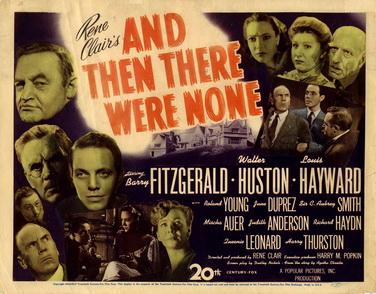

Distributed by 20th Century Fox.

The movie And Then There Were None was released in 1945. Based on Agatha Christie's novel. It was directed by René Clair. Casting Barry Fitzgerald, Walter Huston, Louis Hayward, Ronald Young, June Duprez, Mischa Auer, C.Aubrey Smith, Judith Anderson, Richard Haydn and Queenie Leonard. This movie kept most of the original plot of Agatha Christie’s novel. But at the very end instead of Vera shooting Philip Lombard for real, she did it as if the real murderer would believe that he was dead. However only the 1987 Soviet film and the 2015 BBC One miniseries kept the original ending.
This was an American film. The movie was distributed by major studio 20th Century Fox. The Movie was released on October 30th,1945. The movie was approximately 100 minutes long. It had a budget of $ 1million USD and a Box Office of $ 1 million USD.
wikipedia. ( 2017, February 18). and then there were none film 1945. Retrieved from en.wikipedia.org[digital image] https://en.wikipedia.org/wiki/And_Then_There_Were_None_(1945_film)
wikipedia. ( 2017, February 18). and then there were none film 1945. Retrieved from en.wikipedia.org:https://en.wikipedia.org/wiki/And_Then_There_Were_None_(1945_film)
Return to the novel page.
Return to the top.
© Cadey Chen 2017